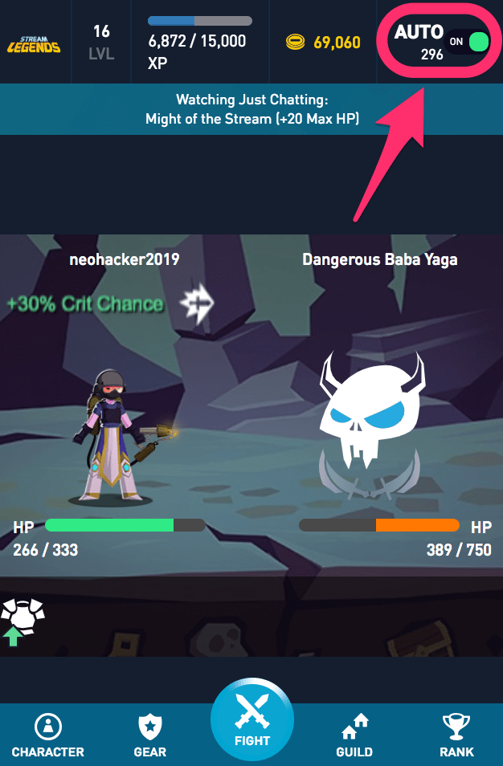
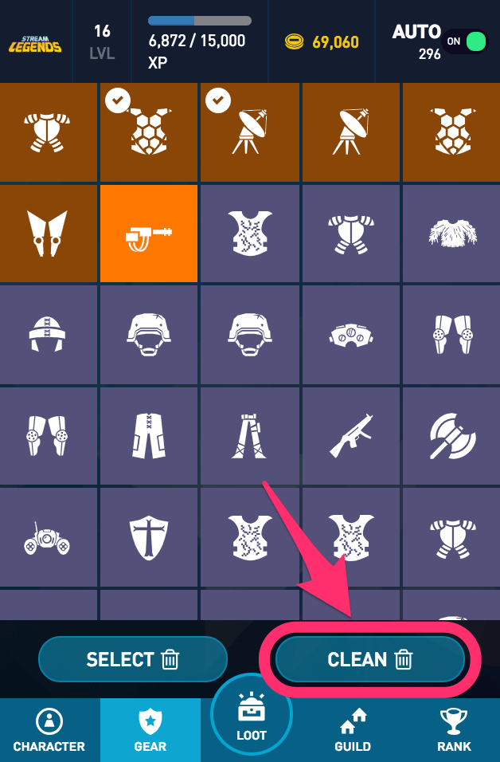
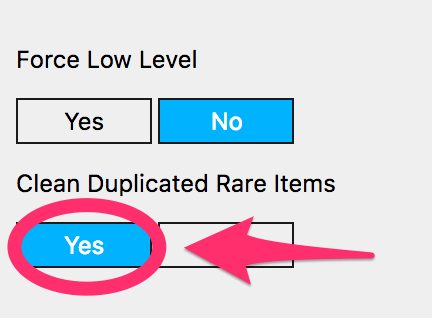
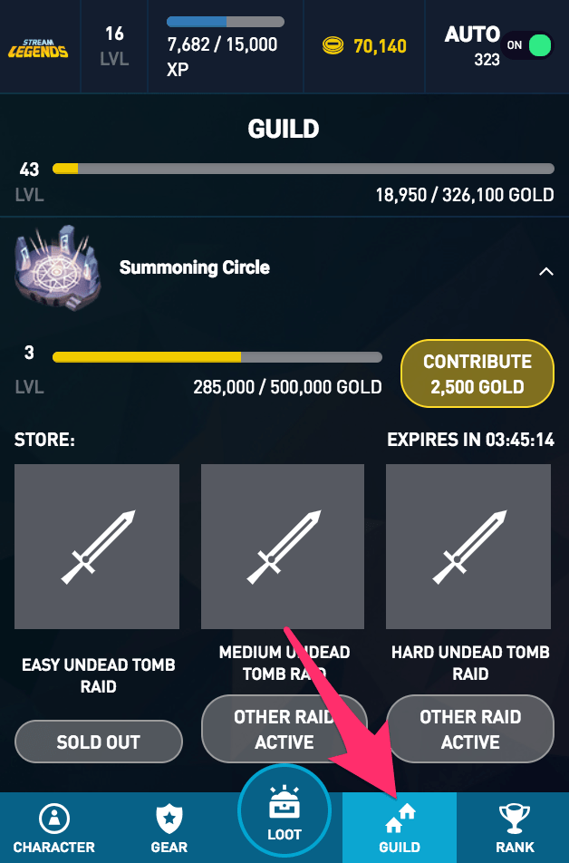

StreamsLegends Extension is a Chrome extension that help you to fight automatically, clean duplicated items and auto contribution in the guild. After installed, reload the page with StreamLegends and it just works.
|  | Auto Fight Toggle Turn ON/OFF anytime. The number below AUTO is the fight counter. |
|  | In the GEAR tab, you'll get the new CLEAN button, it'll select all duplicated items for you.(Max: 100 items per selection) Don't worry about one hand weapons, it'll leave 2 the same one hand items for you. Clean button will leave all the rare items alone. If you want to clean the duplicaated rare items too, 1. Click the extension icon on the toolbar. 2. Turn the switch on.  |
|  | Click GUILD will contribute automatically, click it again would stop. |
Installcation (Google Chrome Only)1. Download StreamLegendsExtension.zip and decompress it to a directory.2. In your Chrome URL, type 'chrome://extensions/', it'll lead you to the extensions management page. 3. Toun on the Developer Mode(the toggle on the top right coner of the page) 4. Click Load unpacked button and choose the decompressed directory. 5. Goto/Reload any twitch channel with StreamLegends and it just works for you. |
|